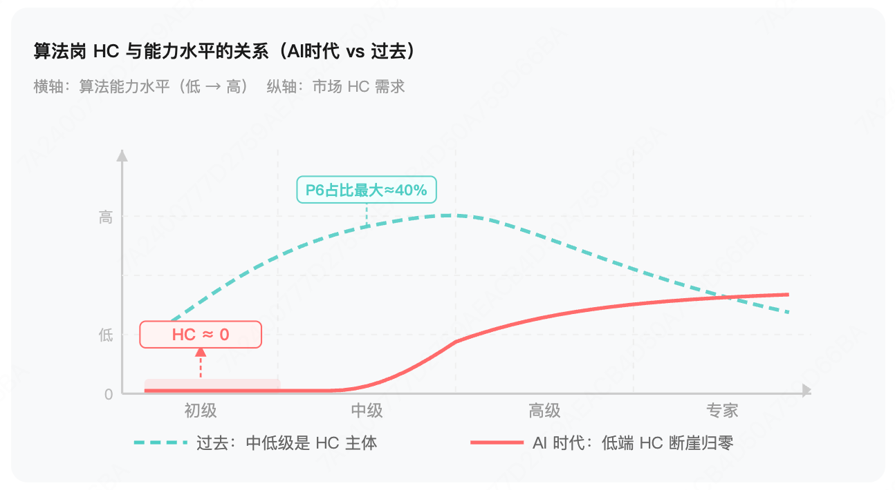
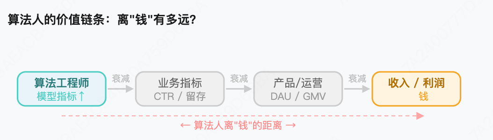

AI × 职业未来 | 2026年06月 · 从个人命运到组织重构的深度思考
GitHub Copilot 数据显示，AI 辅助后开发效率提升 55%。翻译一下：以前需要两个人的活，现在一个人就够了。那多出来的那个人是谁？可能是你。
这不是一个技术趋势问题，而是一个正在发生的现实：业务在收缩，AI 在提效，裁员在提速。 三件事同时压过来，算法工程师、研发工程师，正站在一个真实的十字路口。
很多人还在等一个安慰剂——"AI 只是工具，人类不可替代"。但这篇文章不打算给这个答案。我想给出一个更接近真相的判断：谁会被替代，谁不会，以及你现在能做什么。
本文分三部分：① 降本增效的现状——替代已经在发生，替代的是什么；② Agent 对公司的影响——组织怎么变、算法岗怎么变、权力结构如何重组；③ Agent 对个人的影响——实习生和转行者的处境、如何自救、跳槽还是按兵不动。
"想留不能留才最寂寞，没说完温柔只剩离歌。"
替代已经在发生，但替代的究竟是什么？
很多人不愿意正视这一点，但数据是诚实的。GitHub Copilot 的调研显示，使用 AI 辅助编程后，开发者完成任务的速度提升了 55%。这意味着什么？同样的工作量，以前需要两个人，现在一个人就够了。
| 指标 | 数据 |
|---|---|
| AI辅助后编码效率提升 | 55% |
| 重复性代码可被自动生成 | 80% |
| 超级个体的产出放大倍数 | 3× |
被替代的那部分工作，有一个共同特征：把需求翻译成代码。CRUD 接口、单元测试、数据处理脚本、胶水代码——这些工作的本质是"翻译"，而大模型恰恰是最好的翻译机器。
如果你的日常工作有超过一半是这类"翻译"工作，那么坦率地说，你的岗位正在承受真实的压力。
AI 不是来抢你饭碗的，是来告诉你：你的饭碗本来就不该是这个。
但在焦虑之前，先看一眼历史。每一次技术大变革，都伴随着对"某类工作会消失"的恐慌，而历史的结果总是：旧岗位消失，新岗位涌现，总量不减，结构重塑。 工业革命时纺织工人减少了，但工厂管理员、机器维修工大量涌现；移动互联网时代，没有人预测到"增长黑客""用户体验设计师"会成为主流岗位。AI 时代的新岗位我们现在还看不清，但可以确定：它们一定需要人类的判断力、创造力和对复杂情境的理解能力。 恐慌没有用，看清楚变化的方向才有用。
这里有一个关键的认知误区需要纠正：大模型替代的是"动作"，不是"判断"。
写代码这件事，可以拆成两层：
▼ 正在被替代
▲ 价值在上升
一个真实的例子：算法工程师的核心价值从来不是"写模型代码"，而是对问题的建模能力、对数据的直觉、对实验结果的归因分析。大模型反而可能把算法工程师从繁琐的工程实现中解放出来，让他们更专注于真正有价值的部分。
会写代码的人，正在被 AI 替代；知道写什么代码的人，正在被 AI 放大。
组织结构怎么变、算法岗怎么变、权力如何重组
从组织层面看，我认为会出现三个清晰的趋势，而且这些趋势已经在发生：
趋势一：人均产出要求大幅提升，团队规模收缩。 以前需要 10 个人的团队，3-5 个人就能支撑。但这 3-5 个人需要更强的综合能力——既懂业务又懂技术，还要会用 AI 工具。这不是裁员，而是对"合格线"的重新定义。
趋势二："产品思维"的权重超过"实现能力"。 当代码不再是瓶颈，真正的瓶颈变成了"做什么"而不是"怎么做"。能定义问题、能跟业务方对话、能判断优先级的人，价值会持续上升。纯粹的"实现型"工程师，空间会越来越窄。
趋势三：出现一批"超级个体"。 借助 AI 工具，一个人可以独立完成过去需要小团队才能完成的事情。这对有能力的人是巨大的机会——你的产出可以被放大 3 倍、5 倍，而不需要等待团队协作。
以前，公司养人是因为需要人；以后，公司养人是因为 AI 还做不到。你得想清楚，自己属于哪种。
如果说上面三个趋势还停留在"个人能力"层面，那么接下来这个变化，发生在更深的组织结构层面：原本分散在不同岗位的职能，正在向更少的人身上集中。 而推动这件事发生的，是两股力量同时在压。
第一股力量是降本压力。 业务缩水的时候，公司的第一反应是砍预算、缩编制。过去养得起五个专职岗，现在只想养两个。这个压力本来就存在，只是以前没有合适的工具支撑"两个人干五个人的活"。
第二股力量是 AI 提效。 过去的分工逻辑有一个隐含前提：跨越职能边界的成本很高。一个算法工程师要做数据分析，得学 SQL、学 BI 工具；要做工程部署，得学 K8s、学服务框架。成本高，所以分工合理。但 AI 工具正在把这个跨界成本压到接近零——你用自然语言描述需求，AI 帮你写 SQL、生成部署脚本、输出分析报告。当跨界成本消失，分工的理由也就弱化了。
这两股力量叠加在一起，产生的效果是：公司既有动力合并职能（降本），又有工具支撑合并职能（AI）。这不是理论推演，而是已经在发生的现实——很多公司里，一个"全链路工程师"正在独立完成过去需要三四个人协作的完整链路。
组织形态正在向哑铃结构演变：
但这里有一个重要的反向力量需要注意：业务合并不是无限的。 越是复杂的核心决策，越需要深度的领域专家。大模型可以帮你生成 100 个方案，但判断哪个方案对业务最有价值，需要真正懂这个行业的人。所以顶层的专家反而会更稀缺、更值钱。
那个"我只负责这一块"的中间执行层，会被持续压缩。
业务缩水给了公司合并职能的动力，AI 给了公司合并职能的工具。当动力和工具同时到位，这件事就不再是"会不会发生"，而是"什么时候轮到你"。
不想当产品的算法不是好算法，还没有辞职的产品不是好产品。
前半句说的是算法人必须往业务侧靠，有产品思维才有未来；后半句说的是真正有能力的产品人，早就用脚投票了——AI 时代一个人能撑起一条业务线，留在公司里反而是一种浪费。还没走的，要么是时机未到，要么是还没想清楚自己值多少。
算法岗是一个值得单独讨论的方向，因为它的变化逻辑和普通工程岗有所不同。
过去，算法工程师的大量时间花在工程实现上：搭训练框架、写数据 pipeline、调分布式训练环境。这些工作技术含量不低，但本质上是"让想法跑起来"的基础设施工作。
大模型的出现，正在把这部分工作的成本压缩到接近零。这对算法工程师来说，是解放，不是威胁。 真正的算法价值——实验设计、特征工程的业务洞察、模型效果的归因分析、对业务问题的建模——这些能力反而会被放大。
但有一个前提：你得真的有这些能力，而不是把工程实现当成核心竞争力。如果一个算法工程师的核心价值是"我会搭 PyTorch 训练框架"，那确实需要重新思考了。
搭框架的算法，正在被 AI 取代；懂业务的算法，正在变得无可替代。
说完算法岗的变化，有一个更深层的问题值得正视：以后，算法的领导会是产品经理吗？
短期答案是：不会。算法团队的汇报关系不会简单地翻转成"向产品汇报"，因为产品经理看不懂你的模型好不好，没有能力做技术序列的绩效评估。
但"谁管谁"这件事，正在以一种更隐蔽的方式发生位移。Meta 2025 年重组 AI 部门，让图灵奖得主 Yann LeCun 向一个产品/商业背景的 97 年出生的年轻人汇报——这不是偶然，这是一个信号：当 AI 从研究走向产品化，"该做什么"的决策权比"能不能做"的决策权更值钱，而前者是产品的地盘。
与此同时，这轮裁员里产品经理的比例也相当高。这是不是说明产品思维失效了？恰恰相反。被裁的是"执行型产品经理"——写文档、传话、管排期的那种；留下来的、甚至薪资在涨的，是"决策型产品经理"——能定方向、懂用户、有业务判断力的那种。裁员裁的不是产品思维，裁的是产品思维的低配版。
▼ 正在被淘汰的
▲ 正在变稀缺的
这里有一个关键的结构性变化正在发生：当技术实现成本趋近于零，竞争的核心就从"执行力"变成了"判断力"。 工程师的核心价值过去是"我能把它做出来"，未来这个价值会被 AI 大幅稀释。而"我知道该做什么、为什么做"——这个判断力在技术成本下降的世界里反而更值钱，因为可以尝试的方向变多了，选择正确方向的能力就更稀缺了。
但这里有一个前提经常被忽略：高级产品经理要真正获得对研发的话语权，必须跨过一道坎——他得能看懂技术在做什么。不是要他写代码，而是要他能判断：这个算法方案是不是在走弯路？模型效果差是数据问题还是架构问题？如果产品经理还停留在"我不懂技术，我只管需求"的状态，AI 时代他的话语权不会变大，只会更小。
所以最终的图景不是"产品管算法"，而是：产品往技术方向走，算法往产品方向走，两边都在向中间靠拢，最后在中间相遇的人，才是 AI 时代真正有话语权的人。 这个"中间"，就是既懂业务逻辑又懂模型能力边界的新型角色——有人叫他 AI 产品经理，有人叫他技术产品负责人，本质上是产品思维和算法素养的混合体。
不是产品来管算法，也不是算法来管产品。是两边都在向中间走，谁先走到中间，谁就是下一个时代的负责人。
实习生、转行者、在职者——你现在能做什么
前面说的都是有积累的从业者。但有一类人的处境更值得单独讨论：刚入场的实习生，以及非科班转行做开发/算法的人。 对他们来说，AI 的冲击是不是更致命？
坦率说：几乎是。 不是危言耸听，而是有一个很冷酷的结构性逻辑。
有人会说：AI 把学习曲线压平了，转行者可以更快入门，这不是机会吗？这个逻辑听起来有道理，但忽略了一个关键变量——HC。 学习曲线压平，意味着更多人能达到"能用"的水平；但 HC 在同步收缩，意味着能进来的人更少。两件事叠加的结果不是机会变多，而是竞争烈度暴增，门槛反而更高了。
AI 时代算法岗 HC 的变化：

图里的逻辑很直白：过去，初级算法岗有真实的 HC，公司愿意养一批"能用"的人慢慢培养；AI 时代，低水平算法的 HC 几乎直接归零——不是减少，是消失。因为 AI 本身就是最廉价、最听话、最不会请假的"初级算法工程师"。公司没有理由再花钱养一个需要培养的新人，当 AI 能以接近零成本完成同样的工作。
学习曲线压平带来的，不是"更多人能入场"，而是**"更多人在争夺更少的坑"**。过去一个初级岗位可能有 50 个人竞争，现在同样的岗位可能只剩 5 个名额，但来竞争的有 500 人——因为 AI 工具让更多人能快速达到"看起来够用"的水平。
AI 压平了学习曲线，却没有压平 HC 曲线。前者让更多人能入场，后者让更少人能留下。两条曲线的剪刀差，才是实习生和转行者真正面对的现实。
那是不是完全没有机会？也不是。但机会的形态变了——不再是"靠初级岗慢慢熬"，而是"一开始就得有差异化"。 有一类转行者反而有真实的机会：做过运营的人转算法，天然懂用户行为；做过金融的人转开发，天然懂业务逻辑；做过医疗的人转 AI，天然懂领域数据。AI 工具补齐了他们的技术短板，却补不了科班工程师缺失的业务直觉。这类人不是在和科班生抢同一个初级岗，而是在开辟一个科班生进不去的位置。
科班出身不再是护城河，业务积累才是。AI 时代最危险的人，不是没学过计算机的人，而是只学过计算机的人。
说了这么多压力，最后必须回答这个最实际的问题。但在给路径之前，先要承认一个算法人普遍没意识到的根本困境：算法是所有技术岗里离"钱"最远的。
产品经理知道一个功能上线能带来多少 DAU；运营知道一场活动能拉来多少 GMV；销售知道自己签了多少合同。但算法工程师呢？你优化了一个模型，AUC 涨了 0.3%，这换算成多少收入？你大概率说不清楚。不是因为你的工作没价值，而是因为算法的价值链条太长，中间隔着太多层——从模型指标到业务指标，从业务指标到收入，每一层都有衰减，每一层都有其他因素干扰。
算法人的价值链条： 算法工程师（模型指标↑）→ 业务指标（CTR/留存）→ 产品/运营（DAU/GMV）→ 收入/利润 💰

这种"离钱远"的特性，在公司扩张期不是问题——反正大家都在烧钱，算法是基础设施，养着就行。但在降本期，它就变成了最大的危险：你最难证明自己的价值，也最容易被砍掉。 而算法人又是最了解 AI 底层逻辑的那批人——这是一个巨大的矛盾：你掌握着这个时代最核心的技术，却不知道怎么把它换成钱。
这里要多说一句：虽然这部分以算法岗为例，但"离钱远"是几乎所有研发岗的通病。 后端、前端、客户端、测试、运维——你们和算法人一样，产出的是中间产物，离最终的收入隔着好几层。所以下面这套自救逻辑，对所有靠技术吃饭的人都成立，只是算法岗的处境最典型、最值得拿出来讲。
所以，算法人自救的底层逻辑只有一句话：主动缩短自己和"钱"之间的距离，把知识变现的能力建立起来。 不一定是辞职创业，但一定要让市场直接给你定过价——哪怕一次。
算法人最大的认知盲区，不是不懂业务，而是从来没有被市场直接定过价。当你第一次把自己的技术卖出去，你才真正知道自己值多少。
明确了这个底层逻辑，再来看具体路径。我的判断是：转行不是答案，转型才是。 盲目转行大概率是错的——算法工程师积累的领域知识、数据直觉、实验思维，在 AI 时代反而是稀缺资产，把这些扔掉去转一个没有积累的方向，是从有护城河的地方跑到没有护城河的地方。真正的问题是：在算法这条路上，你往哪个方向走？
🚀 路径一：搞副业，把知识变现，向"个人公司"靠拢 (适合所有人)
这是唯一一条能真正压缩"离钱距离"的路，也是其他所有路径的底层支撑，而最低成本的切入方式就是搞副业。不是要你辞职，而是在职期间主动让市场给你定价：接一个外部项目、做一次付费咨询、出一门课、帮一家小公司解决算法问题、写公众号接广告——任何一种能让陌生人为你的能力付钱的方式都算。
副业的意义不在于赚多少，而在于你会第一次用业务视角审视自己的知识——什么能卖、卖给谁、值多少。 这个认知校准，是在公司里做再多 KPI 都换不来的。当副业积累了足够的市场感知，下一步就是把自己当成一家公司来运营：有稳定的客户来源、有可复制的交付流程、有自己的定价权。
算法人搞副业有天然优势——你最了解 AI 的底层逻辑，而这个时代最不缺的就是想用 AI 却不知道怎么用的人和公司。 有了这个组织外的收入支点，你在公司里的谈判筹码、甚至面对裁员的底气，都会完全不同。
🔬 路径二：把硬实力做强——向深，或向宽 (适合深耕者)
在公司体系内提升"不可替代性"，有两个方向，选一个走到极致即可。
两条分支的共同点是：把 AI 省下来的工程时间，全部投到 AI 替代不了的地方——要么是领域纵深，要么是全局视野。
🎯 路径三：向业务走，成为懂技术的产品人 (适合转型者)
算法工程师最大的隐藏优势是：你比产品经理更懂技术边界，比纯工程师更懂数据和模型。这个"懂两头"的位置，在 AI 时代极其稀缺。
向业务侧靠拢，做 AI 产品经理、算法策略负责人、技术 BD——这些角色需要你既能跟业务方对话，又能判断技术方案的可行性。代码写得少了，但影响力反而更大。适合对业务有热情、沟通能力强、不想一直埋头写代码的人。
三条路径听起来都很宏大，但很多人读完的真实感受是：道理我都懂，可我就是个螺丝钉，周一上班具体该干嘛？ 所以这里给一个小到不能再小、这个周末就能做完的第一步——
把你做过的一个项目，写成一篇能公开发出去的技术复盘，发到任何一个公开平台。
不用等辞职，不用等副业，不用想清楚三条路怎么选。这一个动作，同时启动了好几件事：它逼你把"我做了什么"翻译成"这对别人有什么用"（这就是市场视角的起点）；它让你第一次在公司之外被陌生人看见、被评价、甚至被联系；它是你"个人公司"的第一块招牌。绝大多数人卡在原地，不是因为不知道往哪走，而是因为第一步迈得太大、迟迟不动。先把这一篇写出来，剩下的路会在写的过程中慢慢清晰。
至于完全转行去做一个和技术无关的事——不反对，但要想清楚：你转行的理由是"这个方向没有未来"，还是"我对这个方向没有热情"？前者大概率是误判，后者才是真正值得转行的理由。
自救的本质不是逃离，而是主动重新定义自己的价值。 算法人掌握着这个时代最核心的技术认知，缺的不是能力，而是把能力和钱连起来的那条线。搞副业、做强硬实力、向业务走——三条路，第一条最重要，因为它是另外两条的底层校准。 不动，才是真正的危险。
跳还是不跳，是假问题。真正的目标只有一个：让自己始终处在"随时能跳"的状态。 不是真要你天天跳，而是哪怕一年不动，你也得有随时能走的底气——能力在涨、被市场认、手里有外部选项。做到这一点，跳槽就是你的选择；做不到，被裁就是你的处境。
所以问题不该是"要不要跳"，而是"怎么让自己一直跳得动"：
📡 让外部市场一直在"看见"你
定期更新简历、保持几个猎头的联系、每半年出去面一次试——哪怕不打算走。面试是检验你市场价的唯一方式，比公司给你的绩效靠谱得多。 一旦发现自己面不动了，就是该补课的信号，而不是等被裁了才发现。
🧱 攒"带得走"的资产，而不是"带不走"的
公司内部的流程、黑话、人脉，离职就清零；能带走的是公开的项目复盘、开源贡献、行业影响力、可迁移的硬能力。多花时间在后者上——它们才是你换工作时真正的筹码。
💰 趁热点跳，但别把身价押在标签上
带"大模型""AIGC"标签的岗位现在有溢价，能吃就吃。但要清楚：吃的是岗位溢价，不是你的溢价。 热点会退（三年前"区块链""元宇宙"也是同样的故事）。趁高薪和好平台还在，把它换成真本事，别等退潮才发现自己只剩个褪色的 title。
🎯 跳的时候，选"位置"而不只是选"薪资"
薪资涨 30% 但还是远离业务的螺丝钉，两年后你还在原地。优先选离业务更近、链条更短、能让你往那三条路径上走的下家。好的跳槽是把自己挪到更值钱的位置，不只是把同一个位置标个更高的价。
但说句实在话，上面这套打法的背后，藏着一个互联网人最不愿承认的真相：这一行，本质上是没法休息的。 技术每两年换一代，框架、模型、工具不停迭代，你今天的优势，明年就可能贬值。所谓"随时跳得动"，翻译过来就是——你得永远在学、永远在跑、永远不能停下来喘口气。停一年，可能就跟不上了。这不是某个人的卷，而是整个行业的宿命：选择了互联网，就等于选择了一场没有终点、也不允许中途坐下的长跑。
正因如此，如果你已经厌倦了这种永不停歇的兢兢业业，那"上岸"不失为一个好选择。 上岸是这套逻辑的反面：主动放弃"随时能跳"的状态，换一份确定性和安稳。这没有对错，AI 裁员确实冲击不到体制内，想要安稳它就是合理的出口。唯一要诚实面对的是：它的本质是退出，代价是市场竞争力会慢慢归零。 想清楚自己要的是"继续在跑道上的可能性"，还是"终于可以坐下来的安宁"，答案自然就有了。
真正的安全感，不是一份稳定的工作，而是随时能离开的能力。不必天天跳，但要让自己永远"跳得动"。
大模型不是在消灭研发，而是在提高研发的入场门槛。以前，会写代码就能入场；以后，会写代码只是基础，能定义问题、能做判断、能驾驭 AI 工具的人，才是真正的玩家。 这场变革对有能力的人是红利，对依赖重复性工作保护的人是压力。
每一次技术革命，都在问同一个问题：你是在用工具的人，还是被工具替代的人？
猫的薛定谔007
一线推荐系统工程师，每周在这里分享大厂最新工业论文解读和 AI 时代的职业思考。关注我，和你一起看清这个行业真实的样子。
如果这篇文章对你有启发，欢迎转发给正在思考同样问题的朋友。